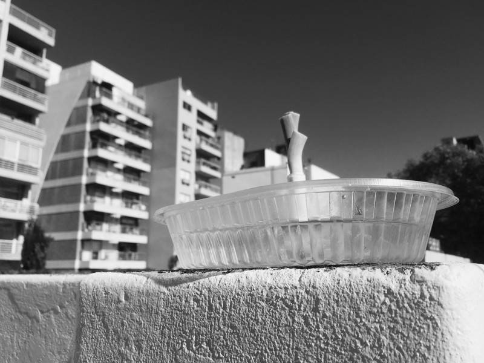
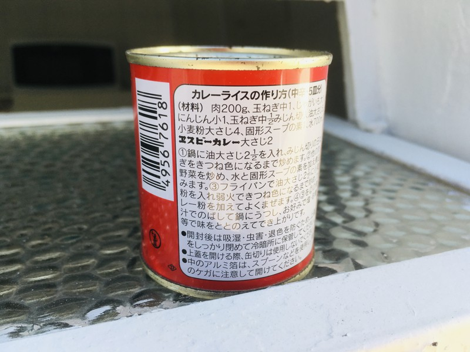
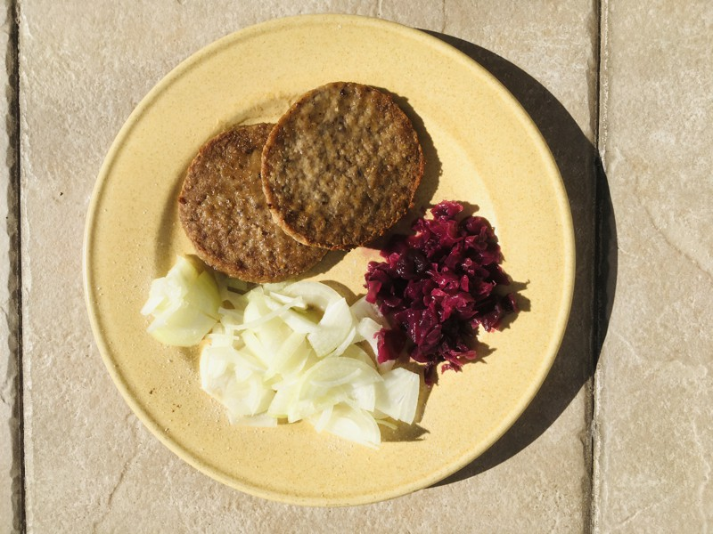
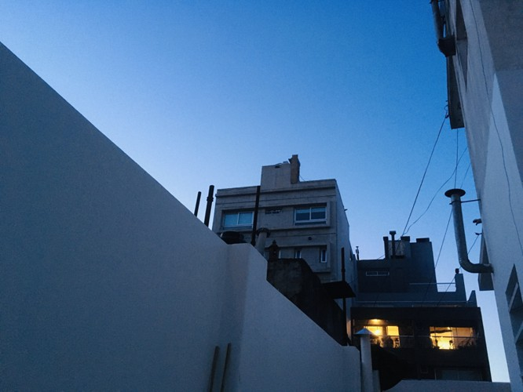
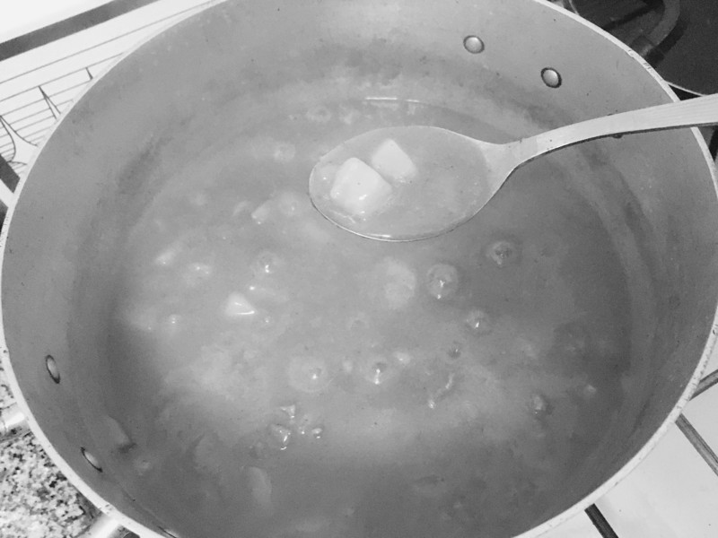
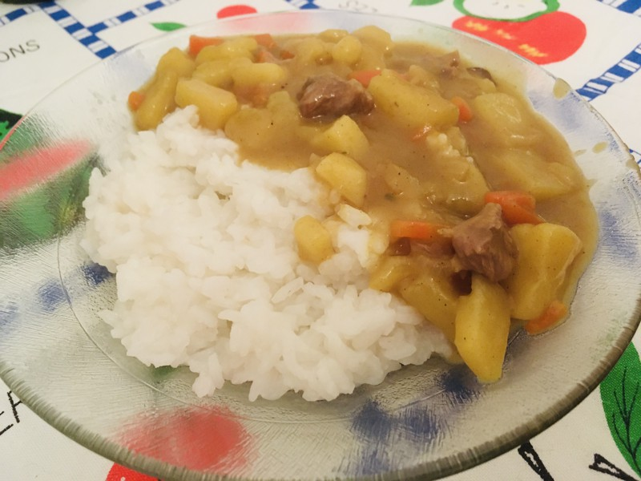
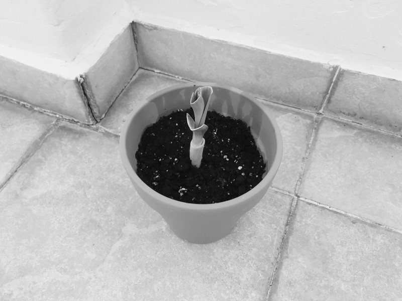

|
|
lartunet — home — computing : games & art : research — sitemap |
This is a double log, because I fell asleep when I was supposed to write yesterday's log entry. It's not much of a deal, though. Today's entry is heavily connected with that one. Two for the price of one.
Also, this entry is going to be in full colour. I like the colours of the pictures I've taken to go with it, and turning on the grayscale filter wouldn't do them any justice.
— T19U70 (JPEG) - view original (2649 KiB, JPG)
First of all, the leek has grown even more. In fact, now I am a little worried that living in water will not suit it anymore, so later today I'm going to see if I can get it a proper pot for it to lay roots in.
Also, I've started trying to grow a carrot. Apparently like growing a single specimen per vegetable.
— T89O61 (JPEG) - view original (2183 KiB, JPG)
I had this little can of S&B Spicy Curry I'd brought from Japan as a souvenir and I was feeling up for some karēraisu, so I decided I'd make some for dinner.
This is not instant curry, but rather normal -albeit somewhat spicy- curry powder. Locally bought spice would've served just fine, but I already had this one, so I'd figured why not use it.
In the end, it seems that the secret was not in the curry itself, but in the recipe. I've made curry in the past, but it was never this good. However, I had never followed a curry recipe like the one on this can. My Japanese is less than perfect, but it's good enough to read it. That was a surprise for me, by the way. I didn't thought I'd be able to understand anything, but alas, the curry was cooked just fine.
In that same topic, during the 2020 pandemic lockdown I began following multiple Japanese accounts on Twitter. That ended up being an amazing choice. My Japanese improved a tad by reading those tiny chunks of text. Kanji are still quite the trouble, though, so I use Rikaikun (Chrome / Edge / Firefox) or Safarikai (Safari) to get their readings on the fly. Great tools, cannot recommend they enough if you are struggling with the language.
— U17D97 (JPEG) - view original (2771 KiB, JPG)
For lunch we had patties with chopped onions and sauerkraut we made from red cabbage some weeks ago. It was easily the best part of the dish. If you want to learn to prepare some for yourself, this video explains the process very well.
After lunch, I spent some time reading the GNU C Manual. It's a rather pleasant read so far. I want to improve my C, this is the first step. SDL2, you are next!
— D12X40 (JPEG) - view original (2393 KiB, JPG)
We spent the better part of the afternoon working and studying outside in the patio. The weather wasn't hot nor cold, so it was perfect for spending some time breathing fresh air.
While doing an assignment for college, I learned to configure RAID disk redundance using mdadm and virtual partitions using LVM. I knew those things existed, but I didn't know how to set them up myself. Now I do, and it's way easier than I had expected. The Debian Administrator's Handbook explains the process in detailed, yet easy to follow steps.
— Q32O72 (JPEG) - view original (2217 KiB, JPG)
For dinner, following the recipe in the can, I made curry. It's a really simple dish, to I'd expect it to be more involved.
Curry Recipe
Take a big potato and a middle-sized carrot (the recipe says small carrot, but we only had middle-to-big ones). Dice them. Then take an onion and dice it. If you eat meat, get some meat and dice it too.
Take a pan and with little oil (4-6 tablespoons) fry half of the diced onions until they are brown. Then add the carrot, potato and meat to the pan and fry them a little too. Then add 700ml of water and a stock cube (I used a vegetable-flavored one) to the pan and let it boil.
While that's cooking, take the other half of the diced onions and put them on a frying pan with again 4 to 6 tablespoons of oil. Fry them while adding 4 to 10 tablespoons of wheat until the onions are brown. The can, again, says 4 tablespoons, but either my spoons are too tiny or my Japanese is not up to the task, because 4 tablespoons of wheat didn't seem like enough. Anyway, add 4 tablespoons of curry powder to the wheaty onions, mix them well and add the wheat-onion-curry concoction to the pan where the vegetables and meat are boiling.
Cook until the vegetables are soft and the meat is cooked and the consistence of the liquid is right (liquid but kinda mushy). Add salt and pepper to taste and serve on white rice.
(You can also find this recipe in the cookbook.
— I77A74 (JPEG) - view original (1957 KiB, JPG)
It was amazing. Oh my, I cannot stress enough how much I like curry. I ate like three plates, then fell asleep for hours.
— W29U44 (JPEG) - view original (1393 KiB, JPG)
Today I went back to the patio, set up a table and worked from there. The sky was blue and almost clear. Under the sun, the cold autumn weather was no more and I had to take my sweater off. Nice for a change!
Of course, we had leftover curry for lunch.
In other news, I'm still reading The Catcher in the Rye, by J. D. Salinger. It's taking me too long to finish it. I've not been able to set time apart for reading. I usually read in bed, but lately I end up the day so tired that I fall asleep immediately.
I am, however, attempting something new with my sleep patterns. Since the day before yesterday, I've been following a biphasic sleep pattern, meaning that I sleep for some hours, then wake up in the middle of the night, do stuff and then go back to sleep again.
What I've found out so far is that, first, I wake up well rested in the morning. And second, that during those hours in-between naps I'm very focused and relaxed. This allows me to study or work without distractions, which I enjoy. Yesterday I spent some hours adding houses to the Stonehollow town of Eterspire Beta II. It's looking quite alright! Today I'll carry on with that.
— N07Y51 (JPEG) - view original (2140 KiB, JPG)
After writing all of that, I went out and bought a pot and dirt for the leek. It's now planted outside. There, everyone happy!